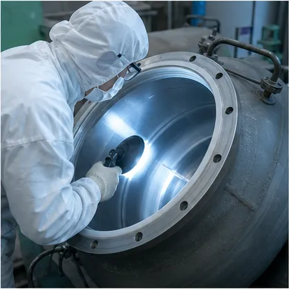
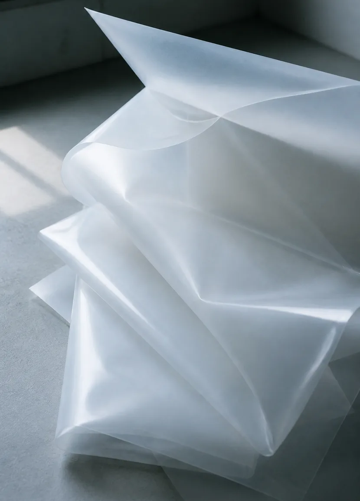

What We Do
内側を引き受ける会社です

薬液も熱も、
内側で受け止める。
化学プラントや半導体工場には、強い酸やアルカリ、高温の液を貯めたり流したりする設備がたくさんあります。金属だけでつくった設備は、こうした液に触れ続けると少しずつ傷み、やがて漏れや汚れの原因になります。
凪ライニング工業は、その内面にフッ素樹脂のシートを貼る「ライニング」を専門にしています。貯槽タンクや配管のような定番の設備から、撹拌翼や熱交換器のように形が込み入った部材まで、設計から施工、検査までを一社で受け持っています。
内面が傷まなければ、設備は予定外に止まらず、中を通る液もきれいなまま保てます。私たちは、目に見えないその状態を毎日つくっています。
Why Lining Matters
内張りが設備を長生きさせる理由
金属の強さと、フッ素樹脂の薬品への強さ。ライニングは、ふたつの素材の得意なところを1枚に重ねる技術です。
- 01
金属を薬液から離す
フッ素樹脂は、ほとんどの酸・アルカリ・溶剤に侵されにくい素材です。金属の内側にこのシートを貼ることで、薬液が金属に直接触れない状態をつくります。
- 02
中を通る液を汚さない
金属が溶け出すと、製品や薬液に不純物が混ざります。わずかな混入も嫌う半導体や電子材料の工程では、内面の材料そのものが品質を左右します。
- 03
修理の間隔をのばす
内面が荒れにくければ、点検や補修の回数を減らせます。設備を止める日が減ることは、そのまま工場の稼働日を守ることにつながります。

Industries
ライニングが使われている現場
- 化学プラント塩酸・硫酸・苛性ソーダなどを扱う貯槽や反応槽、移送配管
- 半導体・電子材料高純度の薬液を扱う槽やタンクコンテナ。金属成分の溶け出しを抑えたい設備
- めっき・表面処理温めた酸の浴槽、排気ダクトやスクラバー
- 医薬・ファインケミカル多品種を切り替えて使う反応槽や、洗浄のしやすさが求められる容器
- 排ガス・排水の処理設備腐食性のガスや廃液が通る充填塔・ダクト・配管
Flow
ご相談から引き渡しまで
新しい設備の内張りも、使っている設備の張り替えも、同じ順番で進めます。定期修理に合わせた工程も組めますので、早めにご相談ください。
- Step 01
お話を伺う
扱う薬液と濃度、温度、圧力、いまの設備の状態を伺います。図面や写真があれば、それをもとに話を進めます。
- Step 02
現地を確認する
張り替えや補修の場合は、設備の内面を実際に見て、傷みの範囲と下地の状態を確かめます。
- Step 03
仕様とお見積
シートの種類と厚み、貼り方、工期をまとめてご提案します。工場で施工するか、構内で施工するかもここで決めます。
- Step 04
製作・施工
下地の処理、シートの接着、継ぎ目の溶接まで、決めた手順どおりに進めます。工程ごとに写真と数値を残します。
- Step 05
検査
ピンホール検査で全面を確かめ、厚みと外観を記録します。検査の結果は、報告書にしてお渡しします。
- Step 06
引き渡し・その後
引き渡したあとも、点検の時期に合わせて状態を一緒に確認します。記録が残っているので、次の判断が早くなります。